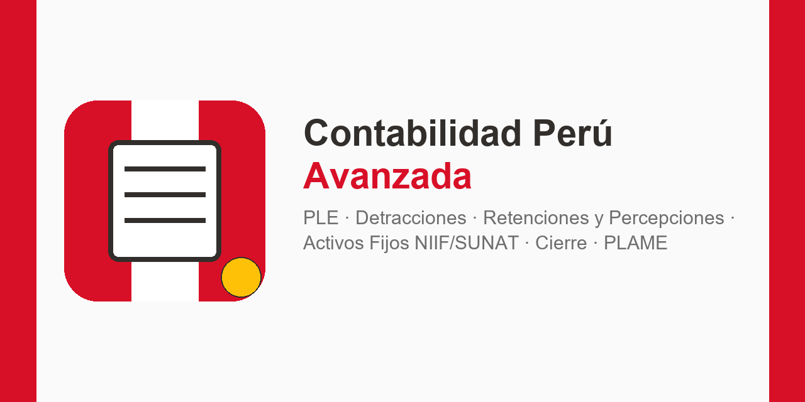
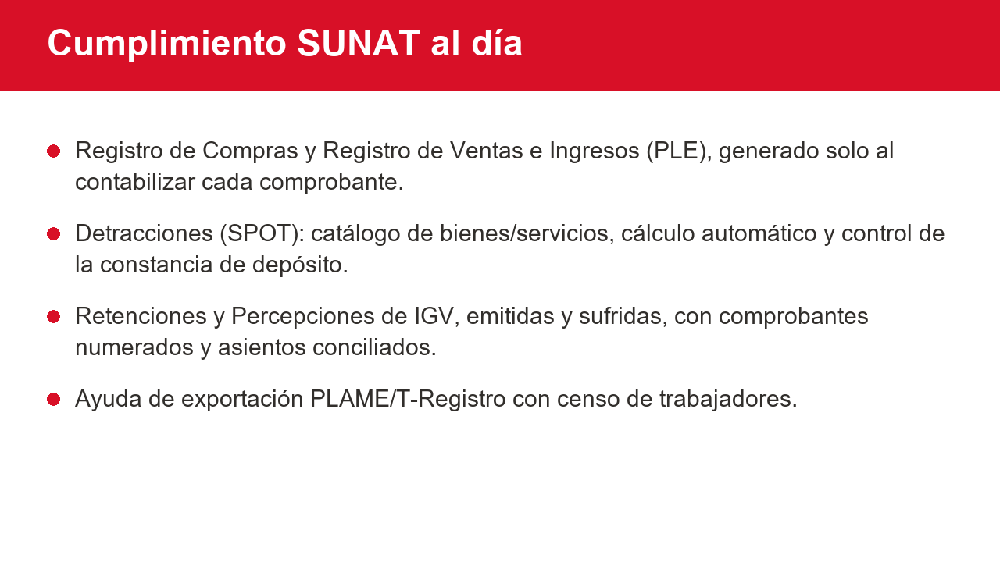
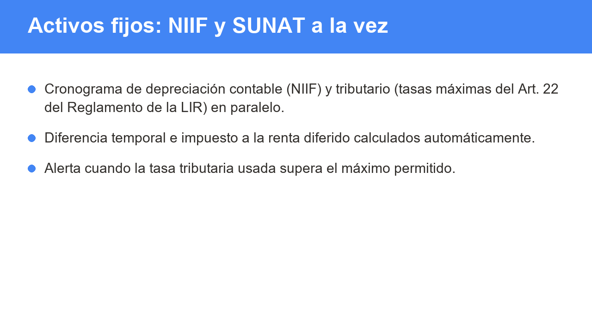
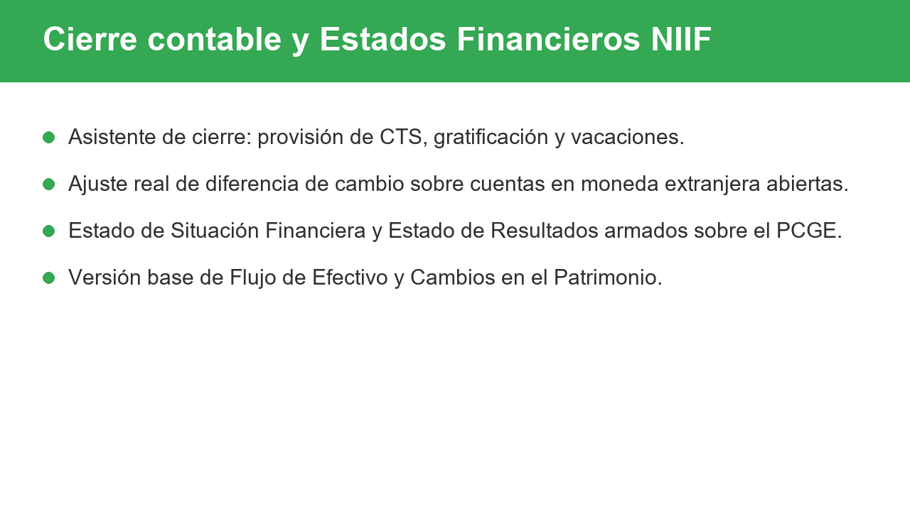

Este módulo agrega, sobre la localización peruana estándar de Odoo 18 y el módulo de facturación electrónica SUNAT, todo lo que un estudio contable o el área de contabilidad de una empresa peruana necesita día a día y que la localización base normalmente no cubre de forma integrada.



l10n_pe (incluida en Odoo).pe_edi_sunat (del mismo
publicador), del cual este módulo extiende la información de comprobantes.Soporte: luissalvador1987@gmail.com